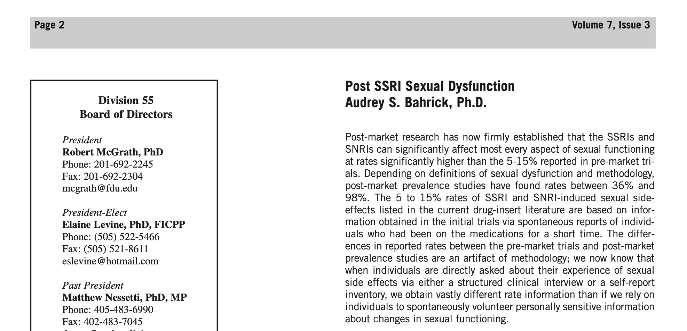

Benvenuto su Post-SSRI Syndrome

La disfunzione sessuale post-SSRI (Post-SSRI Sexual Dysfunction, PSSD) è una sindrome iatrogena causata da psicofarmaci quali inibitori selettivi della ricaptazione della serotonina (SSRI) e inibitori della ricaptazione di serotonina e noradrenalina (SNRI), caratterizzata da disfunzioni sessuali ed emotive dopo la sospensione degli SSRI/SNRI, disfunzioni che prima dell’inizio del trattamento farmacologico non erano presenti. Approfondisci

La PSSD è stata delineata in letteratura medica dal 2006, con diversi solleciti da parte degli autori ad indagare più approfonditamente i rischi e le cause della condizione. Vedi la bibliografia
Ultimi aggiornamenti sulla ricerca
- Luglio 2022 | News, Ricerca scientifica | Identificato un meccanismo in comune tra paroxetina e finasteride
- Gennaio 2022 | News, Ricerca scientifica | Pubblicato paper sui criteri diagnostici per la disfunzione sessuale persistente dopo il trattamento con antidepressivi, finasteride e isotretinoina
- Ago 5, 2021 | News, Ricerca scientifica | Completato il primo studio sulla sospensione di paroxetina da parte dell’Università di Milano, nel contesto della ricerca sull’eziologia della disfunzione sessuale post-SSRI (PSSD)
Visita la pagina delle news
Altre risorse sulla PSSD
- 🌐 PSSD Network: https://www.pssdnetwork.org
- 🌐 PSSD International: https://www.pssd.info/
- 🇨🇦 PSSD Canada: https://www.pssdcanada.ca/
- 🇩🇪 PSSD Germania: https://pssd-hilfe.jimdofree.com/
- 🇮🇹 PSSD Italia: https://postssrisyndrome.org/
- 🇬🇧 PSSD Regno Unito: https://www.pssd-uk.org/
- 🇮🇹 Disfunzioni sessuali post-SSRI
- 🇮🇹 postssrisyndrome.org | Pagina Facebook
- 🇮🇹 PSSD Italia | Gruppo Facebook
- 🇬🇧 Post-SSRI Sexual Dysfunction | RxISK Team
- 🇺🇸 Forum internazionale di riferimento
- Tutti i links